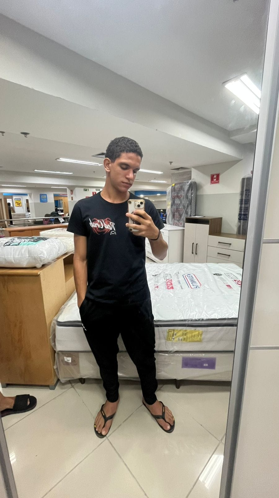

Eu me chamo Jamerson, tenho 15 anos, não sou muito de ler livros; mas gosto muito de praticar esportes como vôlei, futsal, e também gosto muito de esporte de luta como o muay thai; meus hobbies são escutar músicas, dormir, mexer no celular; meus interesses são me aprofundar mais no mundo das lutas, me tornar lutador profissional.
Descrição do curso: É um curso de cerca de 3 anos de duração, onde você aprende sobre o curso, e se aprofunda mais no mundo da tecnologia, durante o curso você aprenderá a:
| Atividades |
|---|
| Tabela básica |
| Tabela semântica |
| Listas avançadas |